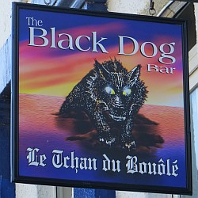

San Antonio, Texas, USA.
lé 23 d'avri, 1983.
Moussieu l'Rédacteu,
J'pense souvent ès séthées d'hivé quand j'tions assis au pid du feu auprès l'thée y'a pus d'huiptante ans. Ieune dé ches sethees-là, man grand-oncl'ye Charles, lé grand des fréthes à Papa, tchi d'meuthait au Ménage ès Feuvres, v'nait d'arriver pour la pâsser auve nous. Il avait sa lantèrne tch'avait des f'nêtres dé corne et tchi n'donnait pon grand' lueu mais tchi gardait les mains caudes. Il est la dreine pèrsonne qué j'mé r'souveins d'aver veu en braies d'bâsîn et à pliatchet et c'mînse dé molleton. Il 'tait acouo habilyi d'même quand i' mouothit en 1911.
Papa 'tait à feunmer sa pipe. Manman, assise dé l' aut' côté d'l'âtre, 'tait à ouvrer, et ou hoûtait d'temps en temps. Pièrrot, nouot' vièr tchian d'Tèrre Neuve, dormillionnait et rêvait sus sa natte, et Minnette, nouot' belle néthe et blianche catte, ronronnait trantchil'yement. Ou pensait probabliément à san galant, lé maraouau à nouot' vaîsîn, lé Sieur Bram Le Ruez, tchi v'nait lî faithe la carre dé temps en temps.
Quand Pièrrot c'menchit à ronflier et qu' Manman avait accliâssé et qu' ses leunettes avaient tchées sus l'but d'san nez, Papa nouos fît un clyîn et lî mînt sa main sus l'êpaule et lî dît: "Né ronfl'ye pon si haut, Ann, car jé n'pouvons pon nouos entre'ouï pâler" !
"Oh mais, tch'il affront!", s'fît Manman, s'rêvilyant en sursaut. "Ch'n'est danme pon mé, tchi ronfliait d'même. Ch'tait Pièrrot!'.
"Bon!", s'fît Papa en nouos faîsant un aut' clyîn, "ch'n'est pon souvent qué j'mé trompe, pourtant!"
"Eh bein, tu t'trompes chutte fais", ou lî dît. "Jé n'dormais pon; j'n'avais fait qu' d'accliâsser".
"I' y'a pus d'confort ichîn qué dans les rues à ces sé," s'fît m'n oncl'ye Charles. "I' n'y fait nu, et l'vent est êpouvantabl'ye. J'pliains bein les naviguants en mé dans chu temps-là."
"Véthe," s'fît Papa, "j'avons la chance dé pouver nouos r'poser d'même, sains et saufs, et nouos caûffer quandi qu' nouos fréthes Jean et Françouai's sont probabliément à combattre la fraid à Paspédgia, ou p't-êt' en mé. J'n'avons pon ouï pâler d'ieux né v'là eune pause. Jé n'sai pon trop bein où'est tch'i' sont pour lé moment. La dreine fais qué j'eûnmes dé lus nouvelles 'tait quand i' nouos envyîdrent un tchînta d'mouothue. Cap'taine Le Bro l's avait veus à La Côte, et i' nouos dît tch'il' 'taient d'charme."
"En pâlant d'confort," nouos dît m'n oncl'ye Charles, "né v'là d's annimaux, Pièrrot et Minnette, tchi n'lus gênent pon du temps. Minnette pathaît êt' prête à catonner, et ou ronronne comme eune ronfliérêsse. Oulle a pus d'chance qué la catte au domestique à Ph'lippe Badgi. Viyant qu'oulle avait volé lé mio d'viande tchi s'en allait tchuithe pour san dînner, i' l'attrapit par les gambes dé driéthe et la fliantchit contre la muthâle deuxs'trais fais. Nou dit tch'il' ont neuf vies, mais chette-là n'en avait qu'ieune, car oulle 'tait morte quand i' r'prînt san bouân sens et rêalisit tch'il avait tué eune pouôrre pétite bête tchi li'avait gardé compangnie au sé, et tchi gardait l'nombre d'souothis a bas dans la grange où'est tch'il avait sa chambre. Il en avait grand r'gret et dêpiet d'n'aver pon contrôllé sa mârrisson. Mais né v'là chein tchi s'arrive quand eune pèrsonne né peut pon accepter les p'tites avâries et înc'modités d'la vie d'touos les jours".
 "J'lé connais bein." Papa nouos dît, "car il amène tchiquefais les j'vaux d'san maître pour êt' féthés. Un bouân travailleux, mais il est bein connu comme ayant un âpre tempéthânment. Mais l'cat et l'tchian sont tellement partie d'la vie d'tous les jours qué nous les r' gardent pûtôt comme membres dé la fanmil'ye qué comme des annimaux."
"Dans la forge, à matîn," j'dis à Papa, "Mess Le Cornu, Darrique, dît tch'il avait un cat tch'est laid comme lé Cat au Sauteux, mais tch'i' vaut eune douzaine dé souothichiéthes. Et Mess Hubert, dé Little Farm, dît qué l'sien 'tait un cat d'âtre et tch'i' s'sait content dé l's êchangi car il est pliein d'souothis. Tch'est tch'est la difféthence entre un cat d'âtre et un Cat au Sauteux?"
"Eh bein," Papa m'dît, "la Minnette est eune catte d'âtre car ou s'y pliait, dans l'âtre, et y pâsse la maintchi d'san temps. Mais i' n'y' a pon rêellement d'Cats au Sauteux. Lé Cat au Sauteux est eune laie maigrache dé cat înmaginnaithe, comme lé Tchian du Bouôlay, tchi n'existe pon sénon dans l'înmaginnâtion des gens, est un tchian înmaginnaithe."
"Eh bein," s'fît m'n oncl'ye Charles, "j'm'en r'vais au Ménage, et jé n'm'attends pon d'vaie ches annimaux înmaginnaithes en c'mîn. Ch'est seux tch'il ont assez d'avis pour lus mett' à l'abri du mauvais temps à ces sé."
Viyiz étout: